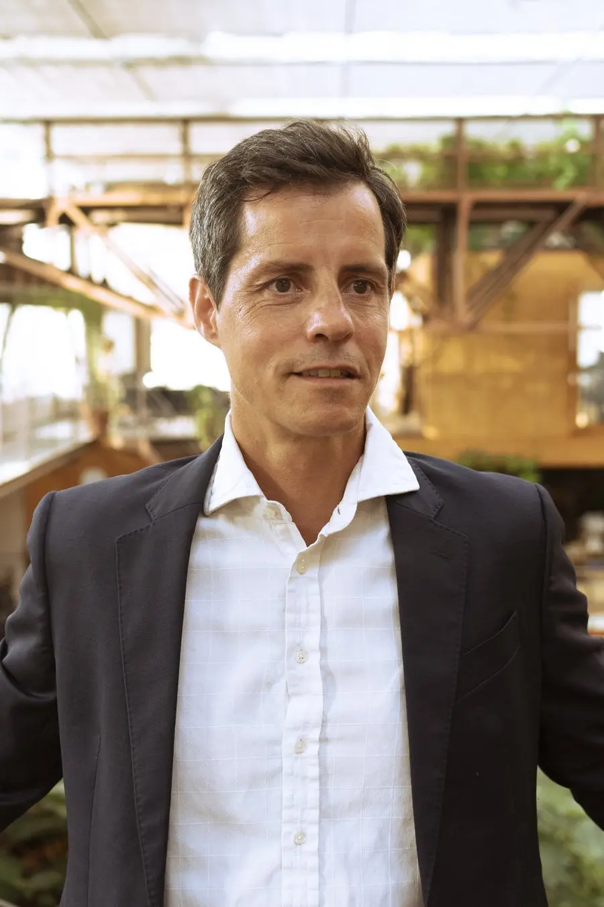

We've spent the last fifteen years helping brands earn visibility on search engines. The fundamentals haven't changed. The surface on which visibility is earned has — and that's the work.
Experts Marketing was founded in Barcelona in 2010 to help brands win on Google. Fifteen years later, we still do that — it's just the foundation of a broader practice now.
What changed is where attention sits. AI-powered search interfaces — ChatGPT, Perplexity, Google AI Overviews, Gemini, Copilot — are increasingly answering questions directly inside the interface. Sometimes that ends with a click to a website. Sometimes it doesn't.
That doesn't replace search. It transforms how visibility works. Brands that show up in the answer earn the trust. Brands that don't, slowly become invisible — even when their classical rankings are intact.
Our job is the same as it's always been: make sure the brands we work with are visible, credible, and chosen. The toolkit now includes AI engines alongside Google. The thinking behind it hasn't changed.


Founder, lead strategist, and the person you'll talk to in week one. Fifteen years working on technical SEO, paid performance and editorial strategy for clients across Europe and North America.
Background in performance marketing leadership at large brands in travel, finance and ecommerce — followed by ten years running Experts Marketing as a senior consultant-led agency from Barcelona. Known for honest reporting, sharp prioritization, and a refusal to sell engagements that don't match the channel timeline.
Add LinkedIn URL when ready · placeholder bio, edit to taste
Barcelona sits at the intersection of European demand, multilingual search, and one of the densest digital marketing ecosystems in southern Europe. It's not where we are by accident — it's where the work fits.
Engagements built around European market structure, regulation, and language nuance — instead of being adapted from a US playbook.
Spanish, Catalan, French, English — first-language work across the four most important markets for southern European brands.
Small team, no leverage model, no junior pyramid. The person you meet in week one is the person doing the work in week twelve.